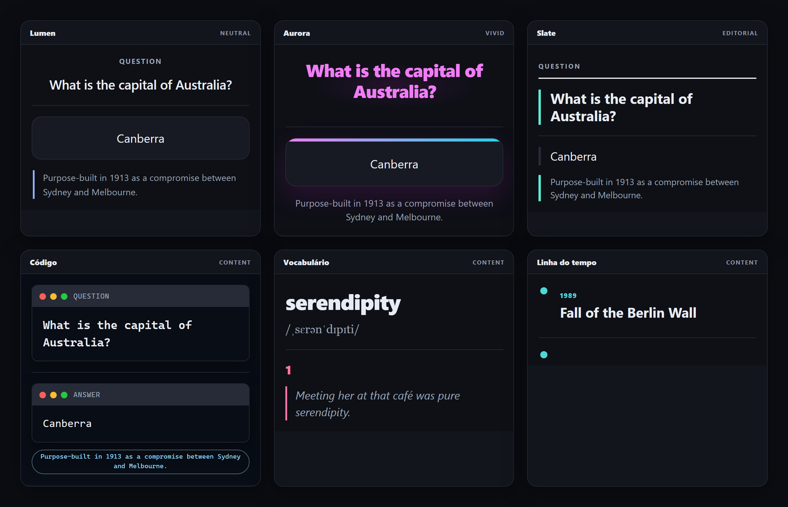

Twelve genuinely different layouts
Editorial, timeline, book page, glossary, code editor, halo, HUD and other structures — not one layout recolored twelve times.
Anki Studio Suite · module
Turn note types into coherent learning interfaces.
Choose one of twelve structurally distinct themes, preview every state and customize fields, typography, color and layout while the engine protects the underlying Anki model.

Rendered by the engineOverview
Card Template Manager replaces brittle HTML/CSS copy-and-paste with a visual workflow that understands Anki note types.
Its v3 engine separates content slots from presentation. A theme is not just a new color palette: each of the twelve themes owns a distinct HTML structure — from editorial pages and timelines to code workspaces and compact HUDs. The selected design is compiled into real front, back and styling templates.
What it does
Every tool is organized around the note type you are editing, so the preview and the generated template stay connected.
Editorial, timeline, book page, glossary, code editor, halo, HUD and other structures — not one layout recolored twelve times.
Inspect the important card states before writing to the collection. The preview is generated by the same engine used for the final template.
Create suggested fields, reorder mappings and connect semantic slots such as question, answer, context, source and hint to your note model.
Refine visual tokens without losing the theme's structure. Advanced users can continue into template and CSS editing.
Layouts adapt to smaller review surfaces and use Anki's compound .card.nightMode selector for reliable dark mode.
Template packages are validated before use. Unsafe paths and malformed payloads are rejected instead of reaching the collection.
How it works
Create a new note type or select an existing one. Existing templates are never migrated silently.
Compare twelve designs in the gallery and inspect their behavior before applying anything.
Connect your fields to semantic slots, then adjust typography, colors, layout controls and optional advanced CSS.
For existing note types, the release build will show the exact before/after diff, create a backup and apply only after explicit confirmation.
Safety by design
Template editing can affect every card produced by a note type. The suite treats that as a sensitive operation.
Compatibility
Release status
The page distinguishes what already works from what still blocks public installation.
The v3 engine and twelve themes are working and tested. Publication is waiting for the opt-in migration diff dialog, final interface translation sweep and visual QA inside Anki.
Install in Anki
The public installation route will appear here as soon as the unified package completes the remaining release gates. No separate Card Template Manager code will be issued.
Available at launchThe final public ID has not been selected yet. We will publish it here after the unified suite passes the release gates.
Frequently asked questions
No. Themes modify note-type templates and styling, not the notes themselves. Existing-type migration will still require an explicit diff review and backup before writing.
Yes. Both modules install together, but you can simply use the template manager and ignore the map. Combining them avoids duplicated infrastructure and version conflicts.
The output is standard Anki HTML and CSS. Normal card review does not depend on a cloud service or a CDN.
Yes. The visual system accelerates setup, while advanced editing remains available for users who need custom behavior.
The two original add-ons are now one suite, and the final AnkiWeb identity must be chosen before publication. Displaying an old or invented ID would install the wrong package.